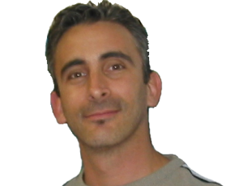

|  | Chris Coppola
The rSmart Group |
|
Bio: Chris Coppola is President of The rSmart Group, a company dedicated to open source solutions for education, and one of the founding Sakai Commercial Affiliates. He is responsible for rSmart 's open source community strategy and leads the rSmart team as they engage and support open source projects that offer great potential for global education. Chris currently serves on the board of the Open Source Portfolio (OSP) and the Kuali Project which were co-founded by rSmart along with leading colleges and universities. He writes and speaks nationally about open source and education. Chris ' career is distinguished by his knowledge of and passion for education and the technologies that offer innovative new tools and approaches for learning, teaching, and research. In 2002 Chris combined his experience in managing and engineering software solutions for education with the skills and experience of John Robinson and Tony Potts to form The rSmart Group. rSmart packages, certifies, deploys, and supports a suite of enterprise administrative and academic open source systems for colleges and universities. During his tenure with rSmart, Chris has played an important leadership role in the evolving open source projects in education. Chris co-founded the Open Source Portfolio (OSP) which has attracted significant national and international attention and is currently a member of the OSP Board. He is also very active in the leadership of the Kuali Project where he serves as a member of the Board. Chris is very active in the Sakai Project representing rSmart in its role as a founding Commercial Affiliate. He leads several Sakai workgroups (Licensing, SCA, and ePortfolio) and volunteers wherever his expertise and energy can make a difference. Prior to co-founding The rSmart Group, Chris received his degree in Industrial Technology from Arizona State University and became an accomplished author of programming and multimedia books. In the early 90 's his entrepreneurial spirit led to the creation of an e-learning software company with partner Anthony Potts. In 1997 they merged with John Robinson 's latest education company. Following the sale of the combined companies to SCT, Chris formed an incubator group at SCT called Thync, which was charged with new product innovation for the company. These innovations included the industry's first real-time data integration components to share student data, grades, and course information between administrative and eLearning systems. Platform:
I would be honored to serve on the Sakai Foundation board and sincerely appreciate the nomination. I believe I can contribute to our community and help realize the unprecedented potential of this very exciting project. As a community we have just begun to realize Sakai 's potential for developing and sustaining world-class educational software and as a platform for innovation in learning, teaching, and research. We are planting some of the early seeds for the embryonic ecosystem that will sustain the growth of open source applications in education. The comments that follow relate a few of my beliefs that focus on what I can personally do to help:
I am committed to the Sakai project, and I am passionate about our potential as a community to have a significant impact on education globally. I have had the opportunity to work with many of you directly over the past few years, and I have enjoyed it immensely. For those who don 't know me I 'm happy to take inquiries via email, IM, or phone. You might also consider speaking with one of your colleagues who may have experience working with me. ICQ-2684085, Yahoo-cdcoppola, AOL-cdcoppola0, MSN-cdcoppola@hotmail.com, GTalk-chris.coppola@gmail.com 602.369.8931 mobile | |